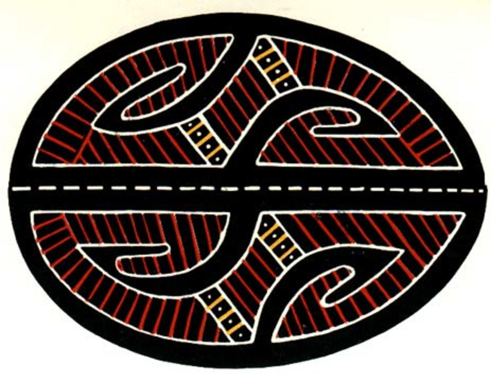

Поділля
 Писанки Поділля досить стримані. Зазвичай їх роблять чорними, що символізує родючу землю. Використовують також й інші темні барви, на кшталт фіолетового чи коричневого. Сам візерунок наносять чорними, червоними та білими кольорами. Рідше – жовтими та зеленими. З візерунків тут можна зустріти ті, що прикрашають рушники, вишиванки та гончарні вироби. Також на них зображають місяць, зірки, дубове листя, курячі лапки, вишеньки, огірочки та черепашки. В залежності від місцевості, тут зустрічаються і геометричні орнаменти, і тваринні та рослинні мотиви.